Swirly Pipe
Prototyping an Endless Racer
- Come up with a simple concept.
- Create a torus.
- Stitch endless random pipes together.
- Move the world around the player.
- Place obstacles inside pipes.
- Add a game menu and HUD.
- Deal with multiple target platforms.
In this tutorial we will create a simple endless racing game prototype. You can try out a WebGL build in your browser.
I expect you know your way around the Unity editor and are familiar with the basics of Unity scripting. If you've gone through the Maze tutorial then you're good to go. See Procedural Grid for the basics of meshes.
This tutorial has been made with Unity 5.0.1.

From Concept to Prototype
How do you create a game? You come up with a concept. Then you design it. Then you build it. Then you release it. Right?
Well, not really. How do you know whether your concept is any good? You build a prototype to find out.
The idea of a prototype is to go from concept to something playable as quickly as possible. Get it into people's hands and see whether you're on to something. If the feedback is promising, it's worthwhile to build it out a bit and gather more feedback. Then you can start thinking about actual design and maybe creating the real game. If instead the prototype falls flat, you just saved yourself from a lot of wasted effort and can start with a new concept.
A prototype is not a polished application. A barely functional ugly mess is quite sufficient. It should run well enough so that the core experience is functional, and that's it. Any time spent optimizing and structuring code is wasted if your concept ends up being a dud. Don't make a deliberate mess though. If anything, be consistent so that anyone – including yourself – who might end up making the real game can make sense of the prototype.
For this tutorial, we keep the concept simple. And endless racing game. In 3D. Through pipes, with obstacles and stuff. And because straight pipes are boring, it must be endlessly curving pipes.
How the pipes are shaped defines the feel of the game. They shouldn't be too straight, because that's dull. They also shouldn't curve too quickly, as that makes it unplayable. What technique could we use to create pipes to our liking?
Bézier splines seem obvious. They give us a lot of control, so we could make any curve we want. However, they're not easy to control. It's not obvious how we could constrain random placement of control points such that we end up with acceptable shapes. And there is also no simple direct way to determine the length of a curve segment.
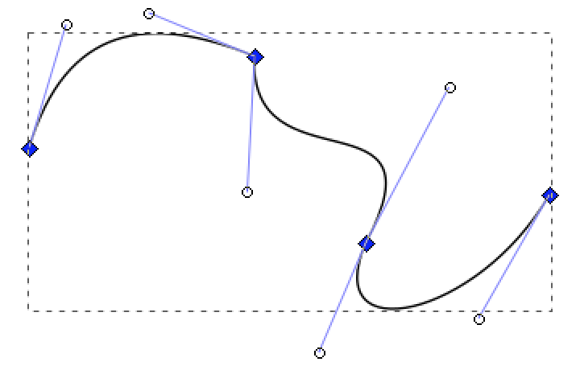
Instead, we can construct our pipe system with biarcs. A biarc is composed of two circular arcs. You create one by concatenating two partial circles. They are easily controlled by limiting the radius and arc length of the circles, and computing the length of each segment is simple.
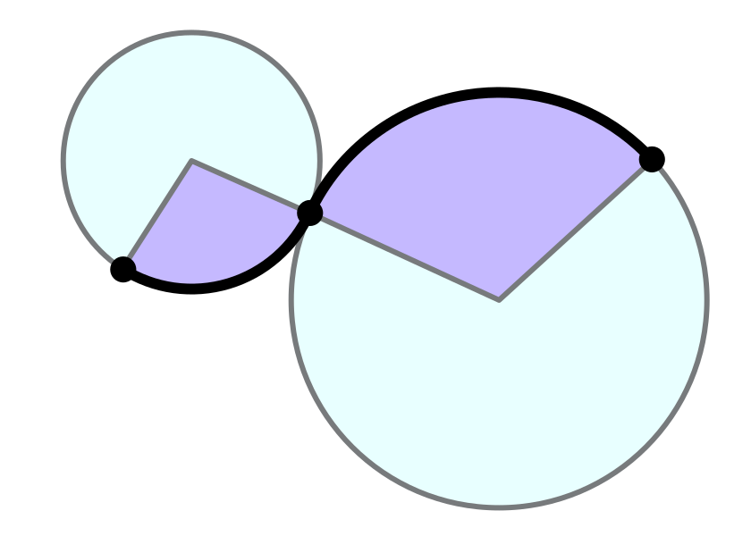
That answers the most important technical question. Now it's time to start building the prototype. We'll figure everything else out as we go.
Building a Pipe
The pipe is the most important element of our game, so let's start with that. A single pipe segment is simply a partial circle. Or as we're working in 3D, a partial torus.
A torus is defined by two radiuses. In our pipe's cases these are the radius of the pipe, and the radius of the curve it's following. Let's put these in a component.
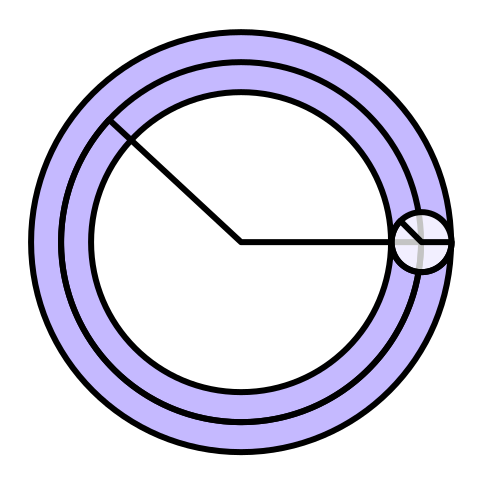
using UnityEngine;
public class Pipe : MonoBehaviour {
public float curveRadius, pipeRadius;
}
We'll use a mesh to create the pipe's surface, so we need to decide how to segment the pipe into quads. The segment count along the curve is independent of the segment count along the pipe's surface.
public int curveSegmentCount, pipeSegmentCount;
Now we can create a new game object and turn it into a pipe. Let's set the pipe radius to one and the curve radius to four. I'll divide the pipe surface into ten segments and use twenty segments for the curve.
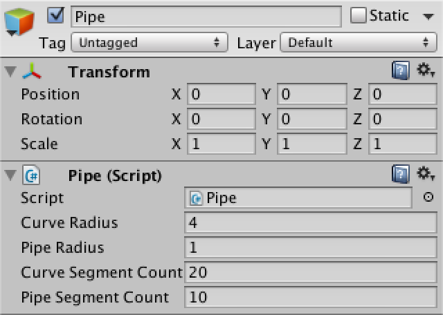
To place vertices we need to be able to find points on the surface of our torus. A torus can be described with a 3D sinusoid function.
x = (R + r cos v) cos u
y = (R + r cos v) sin u
z = r cos v
In the above function r is the radius of the pipe. R is the radius of the curve. The u parameter defines the angle along the curve, in radians, so in the 0–2π range. The v parameter defines the angle along the pipe. We can create a matching method for it.
private Vector3 GetPointOnTorus (float u, float v) {
Vector3 p;
float r = (curveRadius + pipeRadius * Mathf.Cos(v));
p.x = r * Mathf.Sin(u);
p.y = r * Mathf.Cos(u);
p.z = pipeRadius * Mathf.Sin(v);
return p;
}
To test whether we did it right, let's draw some gizmos in the scene view. First just a single ring around the start of the pipe.
private void OnDrawGizmos () {
float vStep = (2f * Mathf.PI) / pipeSegmentCount;
for (int v = 0; v < pipeSegmentCount; v++) {
Vector3 point = GetPointOnTorus(0f, v * vStep);
Gizmos.DrawSphere(point, 0.1f);
}
}
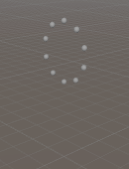
It works! Now show the whole torus, with colors.
float uStep = (2f * Mathf.PI) / curveSegmentCount;
float vStep = (2f * Mathf.PI) / pipeSegmentCount;
for (int u = 0; u < curveSegmentCount; u++) {
for (int v = 0; v < pipeSegmentCount; v++) {
Vector3 point = GetPointOnTorus(u * uStep, v * vStep);
Gizmos.color = new Color(
1f,
(float)v / pipeSegmentCount,
(float)u / curveSegmentCount);
Gizmos.DrawSphere(point, 0.1f);
}
}
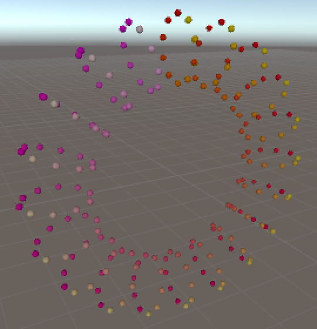
We can see that the torus wraps around the Z axis, clockwise when looking along Z. It starts at the top, and the pipe is constructed in counter-clockwise direction when looking forward.
Now to construct the mesh! We need to add mesh filter and renderer components to the pipe for that. Also set the renderer's material to Unity's default material, so we can see the mesh properly.
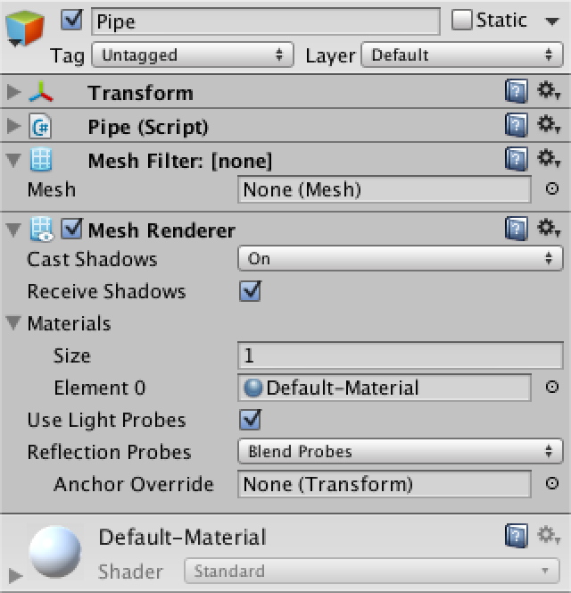
We create the mesh when the object awakens. Then its vertices and triangles need to be set, for which I added separate methods.
private Mesh mesh;
private Vector3[] vertices;
private int[] triangles;
private void Awake () {
GetComponent<MeshFilter>().mesh = mesh = new Mesh();
mesh.name = "Pipe";
SetVertices();
SetTriangles();
}
private void SetVertices () {}
private void SetTriangles () {}
How do we triangulate the torus? We could have each quad share vertices with its neighbors, or give each quad its own four vertices. Because the latter is most flexible, let's go with that.
private void SetVertices () {
vertices = new Vector3[pipeSegmentCount * curveSegmentCount * 4];
mesh.vertices = vertices;
}
Let's start with the first ring of quads only. They require a ring of vertices at the 1st and 2nd step along u.
vertices = new Vector3[pipeSegmentCount * curveSegmentCount * 4]; float uStep = (2f * Mathf.PI) / curveSegmentCount; CreateFirstQuadRing(uStep); mesh.vertices = vertices;
The first step is to get two vertices – A and B – along u. Then we do one step along v and grab the next pair. We keep doing this until we've come full circle. Each step we assign the previous and new points to the current quad's vertices.
private void CreateFirstQuadRing (float u) {
float vStep = (2f * Mathf.PI) / pipeSegmentCount;
Vector3 vertexA = GetPointOnTorus(0f, 0f);
Vector3 vertexB = GetPointOnTorus(u, 0f);
for (int v = 1; v <= pipeSegmentCount; v++) {
vertexA = GetPointOnTorus(0f, v * vStep);
vertexB = GetPointOnTorus(u, v * vStep);
}
}
We have to assign these vertices to the quads as we work our way through the segments.
Vector3 vertexA = GetPointOnTorus(0f, 0f);
Vector3 vertexB = GetPointOnTorus(u, 0f);
for (int v = 1, i = 0; v <= pipeSegmentCount; v++, i += 4) {
vertices[i] = vertexA;
vertices[i + 1] = vertexA = GetPointOnTorus(0f, v * vStep);
vertices[i + 2] = vertexB;
vertices[i + 3] = vertexB = GetPointOnTorus(u, v * vStep);
}
With our first ring set, let's initialize the triangles. Each quad has two triangles, so six vertex indices.
private void SetTriangles () {
triangles = new int[pipeSegmentCount * curveSegmentCount * 6];
mesh.triangles = triangles;
}
Although we'll be looking at the inside of the pipes when playing the game, for now it's handy for us to look at the pipes from the outside. So let's order the vertices so that the triangles show up on the outside of the pipe.
triangles = new int[pipeSegmentCount * curveSegmentCount * 6];
for (int t = 0, i = 0; t < triangles.Length; t += 6, i += 4) {
triangles[t] = i;
triangles[t + 1] = triangles[t + 4] = i + 1;
triangles[t + 2] = triangles[t + 3] = i + 2;
triangles[t + 5] = i + 3;
}
mesh.triangles = triangles;
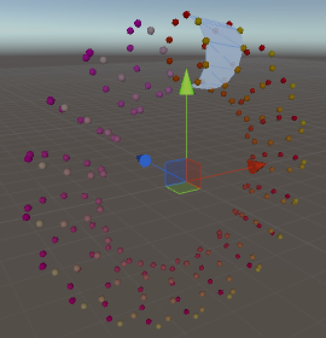
Our first ring shows up correctly. All other vertices are still stuck at the origin, so we don't see the other quads yet. Let's change that.
private void SetVertices () {
vertices = new Vector3[pipeSegmentCount * curveSegmentCount * 4];
float uStep = (2f * Mathf.PI) / curveSegmentCount;
CreateFirstQuadRing(uStep);
int iDelta = pipeSegmentCount * 4;
for (int u = 2, i = iDelta; u <= curveSegmentCount; u++, i += iDelta) {
CreateQuadRing(u * uStep, i);
}
mesh.vertices = vertices;
}
The CreateQuadRing method works the same as CreateFirstQuadRing, except that it only needs to add a single vertex each step. It can copy the first two vertices per quad from those of the previous ring.
private void CreateQuadRing (float u, int i) {
float vStep = (2f * Mathf.PI) / pipeSegmentCount;
int ringOffset = pipeSegmentCount * 4;
Vector3 vertex = GetPointOnTorus(u, 0f);
for (int v = 1; v <= pipeSegmentCount; v++, i += 4) {
vertices[i] = vertices[i - ringOffset + 2];
vertices[i + 1] = vertices[i - ringOffset + 3];
vertices[i + 2] = vertex;
vertices[i + 3] = vertex = GetPointOnTorus(u, v * vStep);
}
}
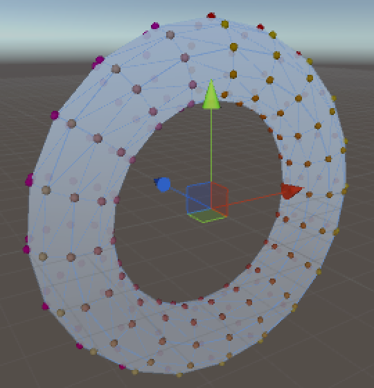
We now see the entire torus, but it looks flat. That's because the mesh doesn't have any normals. Let Unity compute the normals so we can have a better look. The torus will appear faceted because we made the quads independent.
private void Awake () {
GetComponent<MeshFilter>().mesh = mesh = new Mesh();
mesh.name = "Pipe";
SetVertices();
SetTriangles();
mesh.RecalculateNormals();
}
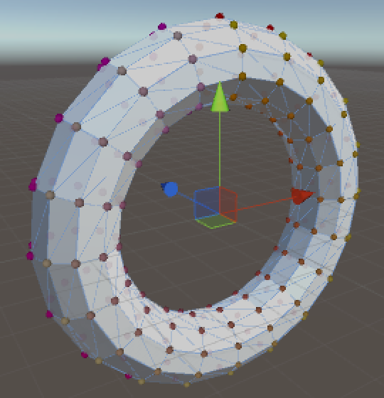
Building a Pipe System
Right now we're creating an entire torus, but each individual pipe should only cover a fraction of a torus. We can do this by setting the distance between rings to a fixed value. Then then amount of curve segments determines the length of the pipe's arc.
public float ringDistance;
private void SetVertices () {
vertices = new Vector3[pipeSegmentCount * curveSegmentCount * 4];
float uStep = ringDistance / curveRadius;
CreateFirstQuadRing(uStep);
int iDelta = pipeSegmentCount * 4;
for (int u = 2, i = iDelta; u <= curveSegmentCount; u++, i += iDelta) {
CreateQuadRing(u * uStep, i);
}
mesh.vertices = vertices;
}
Just set the ring distance to one unit. Also get rid of OnDrawGizmos, because we no longer need it.
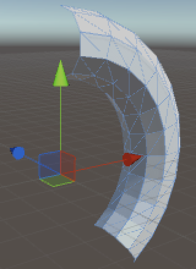
We need something that stitches multiple pipes together. So we create a new pipe system component and object. It needs a pipe prefab, of which it will create a fixed number of instances as children of itself.
using UnityEngine;
public class PipeSystem : MonoBehaviour {
public Pipe pipePrefab;
public int pipeCount;
private Pipe[] pipes;
private void Awake () {
pipes = new Pipe[pipeCount];
for (int i = 0; i < pipes.Length; i++) {
Pipe pipe = pipes[i] = Instantiate<Pipe>(pipePrefab);
pipe.transform.SetParent(transform, false);
}
}
}
Turn our pipe object into prefab and assign that to the system. I set it to create four pipes for now.
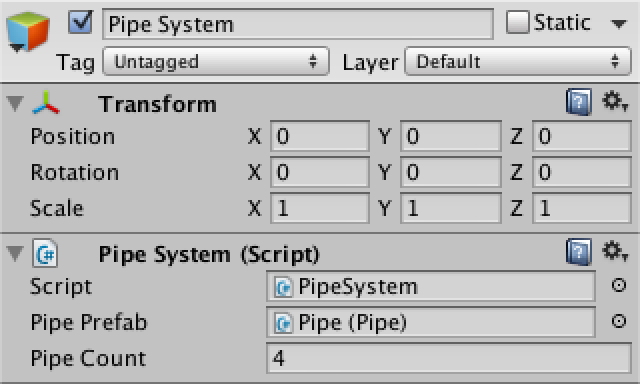
The pipes need to somehow be aligned with each other. The first one leads the pack, the others should each be aligned with the previous one.
pipes = new Pipe[pipeCount];
for (int i = 0; i < pipes.Length; i++) {
Pipe pipe = pipes[i] = Instantiate<Pipe>(pipePrefab);
pipe.transform.SetParent(transform, false);
if (i > 0) {
pipe.AlignWith(pipes[i - 1]);
}
}
Now we need to figure out how Pipe can align itself another instance. For that we need the angle of the curve of the previous pipe.
private float curveAngle;
private void SetVertices () {
vertices = new Vector3[pipeSegmentCount * curveSegmentCount * 4];
float uStep = ringDistance / curveRadius;
curveAngle = uStep * curveSegmentCount * (360f / (2f * Mathf.PI));
CreateFirstQuadRing(uStep);
int iDelta = pipeSegmentCount * 4;
for (int u = 2, i = iDelta; u <= curveSegmentCount; u++, i += iDelta) {
CreateQuadRing(u * uStep, i);
}
mesh.vertices = vertices;
}
Then we can rotate by that angle in the opposite direction.
public void AlignWith (Pipe pipe) {
transform.localRotation = Quaternion.Euler(0f, 0f, -pipe.curveAngle);
}
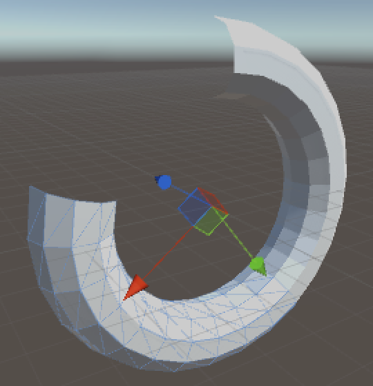
This works, but only for one step. Now all but the first pipe end up overlapping. The rotation somehow needs to be cumulative. A quick way to do this is by temporarily turning the pipe into its predecessor's child. Setting the rotation is always correct from that frame of reference. Then we turn it back into a child of the whole system, while keeping its current world position.
transform.SetParent(pipe.transform, false); transform.localRotation = Quaternion.Euler(0f, 0f, -pipe.curveAngle); transform.SetParent(pipe.transform.parent);
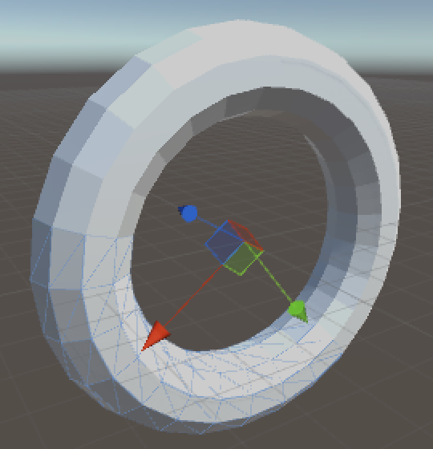
The pipes now complete the whole circle and end up overlapping again quickly. We want pipes to have a random relative rotation, so they can go anywhere. We can do this with some careful positioning.
First we want to make sure that the pipe is at its parent's origin. Then we align with the parent, as before. Next, we move up so our origin sits at the end point of our parent's pipe. Here we can perform our random relative rotation. After that we move down – from our own points of view – to align the pipe end and start.
public void AlignWith (Pipe pipe) {
float relativeRotation = Random.Range(0f, 360f);
transform.SetParent(pipe.transform, false);
transform.localPosition = Vector3.zero;
transform.localRotation = Quaternion.Euler(0f, 0f, -pipe.curveAngle);
transform.Translate(0f, pipe.curveRadius, 0f);
transform.Rotate(relativeRotation, 0f, 0f);
transform.Translate(0f, -curveRadius, 0f);
transform.SetParent(pipe.transform.parent);
}
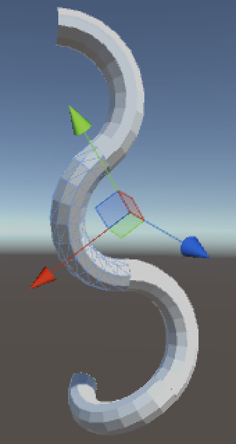
The pipes now rotate freely while still being aligned with each other. However, the meshes don't perfectly fit together. We have to restrict the relative rotation to fit the pipe segments.
float relativeRotation = Random.Range(0, curveSegmentCount) * 360f / pipeSegmentCount;
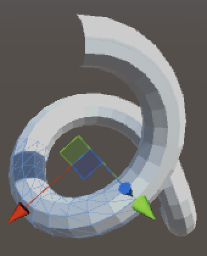
Finally, to allow a huge variety of pipe systems, randomize the curve radius and segment count to each fall within some range.
public float pipeRadius;
public int pipeSegmentCount;
public float minCurveRadius, maxCurveRadius;
public int minCurveSegmentCount, maxCurveSegmentCount;
private float curveRadius;
private int curveSegmentCount;
private void Awake () {
GetComponent<MeshFilter>().mesh = mesh = new Mesh();
mesh.name = "Pipe";
curveRadius = Random.Range(minCurveRadius, maxCurveRadius);
curveSegmentCount =
Random.Range(minCurveSegmentCount, maxCurveSegmentCount + 1);
SetVertices();
SetTriangles();
mesh.RecalculateNormals();
}
What these ranges should be depends on what you're going for. Long and smooth? Short and curvy? You also want to find a configuration that doesn't intersect itself too quickly. I kept the pipe radius at one, let the curve radius fall between four and twenty, and and pipe segment count between four and ten.
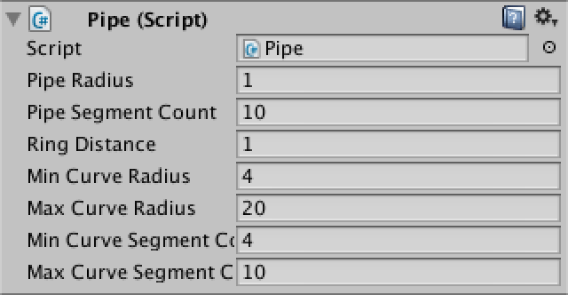
Moving Through the Pipes
Our game needs a player, which deserves its own component and object. The player moves through system, one pipe at a time, with some velocity.
using UnityEngine;
public class Player : MonoBehaviour {
public PipeSystem pipeSystem;
public float velocity;
private Pipe currentPipe;
}
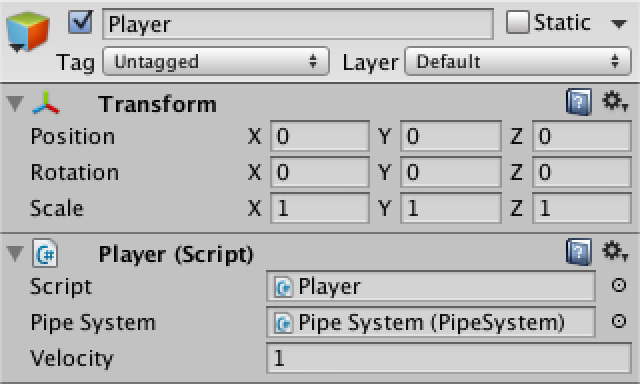
Actually, let's keep the player at the origin and move the pipe system instead. You won't be able to tell the difference, and we won't need to worry about going too far away from the origin. Regardless, we need to start at the first pipe of the system.
private void Start () {
currentPipe = pipeSystem.SetupFirstPipe();
}
Now PipeSystem has to provide the first pipe, which is easy. To make sure that the pipe starts at the origin, the whole system has to move down by an amount equal to that pipe's curve radius.
public Pipe SetupFirstPipe () {
transform.localPosition = new Vector3(0f, -pipes[0].CurveRadius);
return pipes[0];
}
The curve radius of Pipe is currently private. Let's keep it that way to signal that it shouldn't be changed. Instead, we can add a property to Pipe so others can access it.
public float CurveRadius {
get {
return curveRadius;
}
}
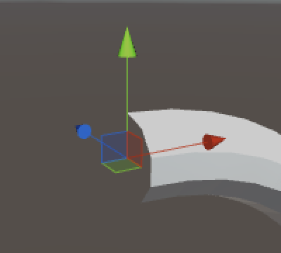
Back to Player, the distance that it has traveled increases with time. We like to keep track of this, as it's the typical way to score a player's performance.
private float distanceTraveled;
private void Update () {
float delta = velocity * Time.deltaTime;
distanceTraveled += delta;
}
But we don't move in a straight line. We have to convert the delta into a rotation. Then we can use that to update the system's orientation.
private float deltaToRotation;
private float systemRotation;
private void Start () {
currentPipe = pipeSystem.SetupFirstPipe();
deltaToRotation = 360f / (2f * Mathf.PI * currentPipe.CurveRadius);
}
private void Update () {
float delta = velocity * Time.deltaTime;
distanceTraveled += delta;
systemRotation += delta * deltaToRotation;
pipeSystem.transform.localRotation =
Quaternion.Euler(0f, 0f, systemRotation);
}
The system now rotates. The next step is to detect the end of current pipe. We need the curve angle for that, so Pipe gets another property.
public float CurveAngle {
get {
return curveAngle;
}
}
Once Player moves past that angle, we have to convert any extra rotation back into a distance, then jump to next pipe with the remaining delta.
private void Update () {
float delta = velocity * Time.deltaTime;
distanceTraveled += delta;
systemRotation += delta * deltaToRotation;
if (systemRotation >= currentPipe.CurveAngle) {
delta = (systemRotation - currentPipe.CurveAngle) / deltaToRotation;
currentPipe = pipeSystem.SetupNextPipe();
deltaToRotation = 360f / (2f * Mathf.PI * currentPipe.CurveRadius);
systemRotation = delta * deltaToRotation;
}
pipeSystem.transform.localRotation =
Quaternion.Euler(0f, 0f, systemRotation);
}
Setting up the next pipe means that PipeSystem has to shift the pipes in its array, align the next pipe with the origin, and reset its position.
public Pipe SetupNextPipe () {
ShiftPipes();
AlignNextPipeWithOrigin();
transform.localPosition = new Vector3(0f, -pipes[0].CurveRadius);
return pipes[0];
}
Shifting pipes forward is easy. The current first pipe becomes the new last pipe.
private void ShiftPipes () {
Pipe temp = pipes[0];
for (int i = 1; i < pipes.Length; i++) {
pipes[i - 1] = pipes[i];
}
pipes[pipes.Length - 1] = temp;
}
Aligning the new first pipe can be done by simply resetting its position and rotation. To make sure that all other pipes move along with it, just temporarily make them children of that pipe.
private void AlignNextPipeWithOrigin () {
Transform transformToAlign = pipes[0].transform;
for (int i = 1; i < pipes.Length; i++) {
pipes[i].transform.SetParent(transformToAlign);
}
transformToAlign.localPosition = Vector3.zero;
transformToAlign.localRotation = Quaternion.identity;
for (int i = 1; i < pipes.Length; i++) {
pipes[i].transform.SetParent(transform);
}
}
When playing, the game now loops through all pipes continuously. But each pipe segment snaps to the default orientation. We need to compensate for this with a world rotation. Create a world object at origin and make the pipe system a child of it.
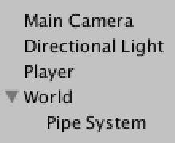
To perform the compensation, Player needs a reference to the world, which it can obtain via the pipe system.
private Transform world;
private void Start () {
world = pipeSystem.transform.parent;
currentPipe = pipeSystem.SetupFirstPipe();
deltaToRotation = 360f / (2f * Mathf.PI * currentPipe.CurveRadius);
}
Now we need the pipe's relative rotation. So let Pipe remember it and expose it via a property.
private float relativeRotation;
public float RelativeRotation {
get {
return relativeRotation;
}
}
public void AlignWith (Pipe pipe) {
relativeRotation =
Random.Range(0, curveSegmentCount) * 360f / pipeSegmentCount;
…
}
The Player has to keep track of the world rotation and update it when going into a new pipe. As it needs to do this in both Start and Update, it makes sense to put that code into its own method.
private float worldRotation;
private void Start () {
world = pipeSystem.transform.parent;
currentPipe = pipeSystem.SetupFirstPipe();
SetupCurrentPipe();
}
private void Update () {
…
if (systemRotation >= currentPipe.CurveAngle) {
delta = (systemRotation - currentPipe.CurveAngle) / deltaToRotation;
currentPipe = pipeSystem.SetupNextPipe();
SetupCurrentPipe();
systemRotation = delta * deltaToRotation;
}
…
}
private void SetupCurrentPipe () {
deltaToRotation = 360f / (2f * Mathf.PI * currentPipe.CurveRadius);
worldRotation += currentPipe.RelativeRotation;
if (worldRotation < 0f) {
worldRotation += 360f;
}
else if (worldRotation >= 360f) {
worldRotation -= 360f;
}
world.localRotation = Quaternion.Euler(worldRotation, 0f, 0f);
}
With this in place, we move through the pipes properly! But we're still looping back to the first pipe once we reach the end. Of course we don't want that to happen, we want to keep going forward. How many pipes are needed to achieve that?
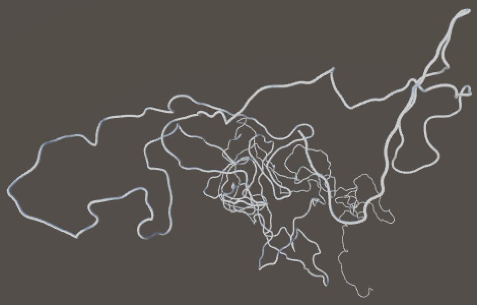
Theoretically, the player could go forward forever and pass through an infinite amount of pipes. But we don't need to show all of them at once. We only need those pipes that are visible to the player, which aren't that many, as they keep curving out of view.
This means that we can take the pipe that we just passed and use it to generate a new one at the end, which is hopefully not yet visible. To allow for this, change Pipe so it fills its mesh in a public Generate method.
private void Awake () {
GetComponent<MeshFilter>().mesh = mesh = new Mesh();
mesh.name = "Pipe";
}
public void Generate () {
curveRadius = Random.Range(minCurveRadius, maxCurveRadius);
curveSegmentCount =
Random.Range(minCurveSegmentCount, maxCurveSegmentCount + 1);
mesh.Clear();
SetVertices();
SetTriangles();
mesh.RecalculateNormals();
}
After this change PipeSystem needs to explicitly generate the pipes when it awakens.
private void Awake () {
pipes = new Pipe[pipeCount];
for (int i = 0; i < pipes.Length; i++) {
Pipe pipe = pipes[i] = Instantiate<Pipe>(pipePrefab);
pipe.transform.SetParent(transform, false);
pipe.Generate();
if (i > 0) {
pipe.AlignWith(pipes[i - 1]);
}
}
}
And can do so as well when going for the next pipe.
public Pipe SetupNextPipe () {
ShiftPipes();
AlignNextPipeWithOrigin();
pipes[pipes.Length - 1].Generate();
pipes[pipes.Length - 1].AlignWith(pipes[pipes.Length - 2]);
transform.localPosition = new Vector3(0f, -pipes[0].CurveRadius);
return pipes[0];
}
It works! The pipes keep going forever. But let it run for a while and you'll probably see things go wrong.
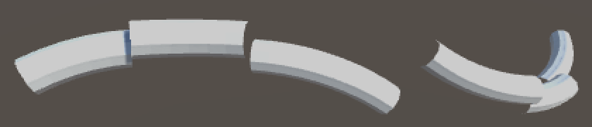
As it turns out, all this changing of parents slowly degrades the quality of transforms. This is not a problem for positions and rotations, as we constantly set these ourselves. However, we never touch the transform's scale, which causes it to shrink dramatically after a while. Fortunately, this can be prevented by having Pipe reset its scale after each alignment.
public void AlignWith (Pipe pipe) {
…
transform.localScale = Vector3.one;
}
unitypackage
Racing Through Pipes
We're now moving through the center of the pipes. To turn it into a proper racing game, we should move along the surface of the pipes instead, so we can steer and avoid stuff. And we need something to visualize the player.
The player object itself can actually stay put at the origin. We can provide the illusion of movement by adding an avatar with a slight vertical offset and rotating it around the X axis. To complete the experience of racing along the pipes, place the camera slightly behind and above the avatar and make it a child of it.
What should the avatar look like? A ship? A running person or robot? Something abstract? The shape of the avatar is up to you. I used two simple particle systems, one for its shape and one to create a trail.
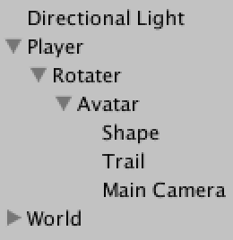
The rotater is a direct child of the player and will be used to control the avatar. The avatar itself is a container object which I placed at (0, -0.75, 0). I set the camera's local position to (-0.75, 0.25, 0) and its rotation to (10, 90, 0).
I configured the particle systems so they suggest a shape that roughly matching a sphere with a radius of 0.1 unit. The trail has a rotation of (0, 270, 0) so it ejects particles backwards. I set it to simulate in world space so the trail of particles will swirl behind the avatar as it steers.
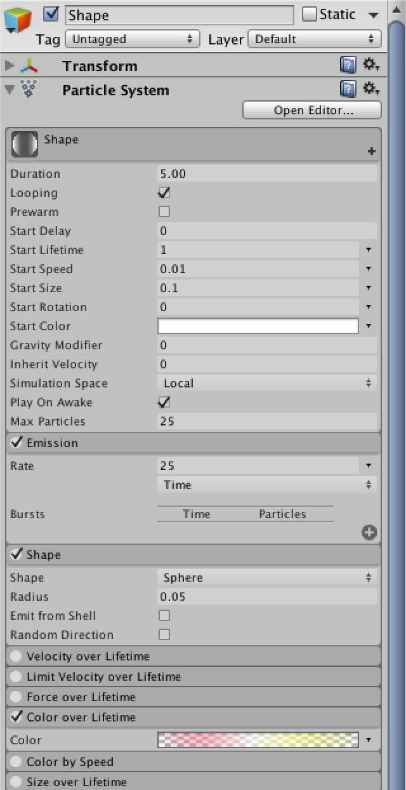
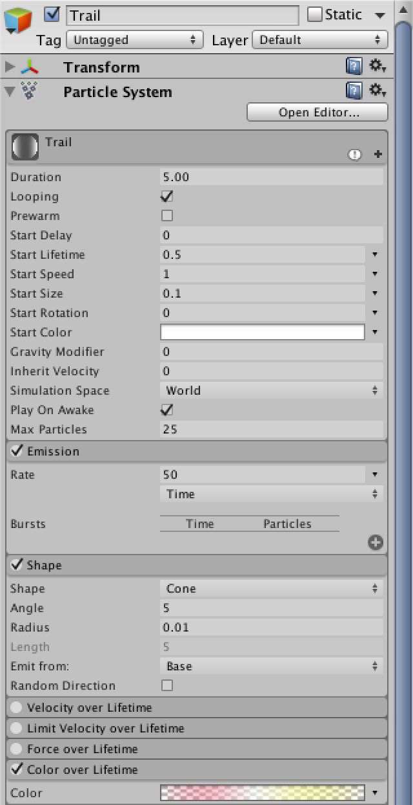
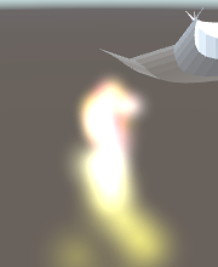
Now that we are looking at the inside of the pipes, the way we order the triangles of Pipe needs to be inverted.
private void SetTriangles () {
triangles = new int[pipeSegmentCount * curveSegmentCount * 6];
for (int t = 0, i = 0; t < triangles.Length; t += 6, i += 4) {
triangles[t] = i;
triangles[t + 1] = triangles[t + 4] = i + 2;
triangles[t + 2] = triangles[t + 3] = i + 1;
triangles[t + 5] = i + 3;
}
mesh.triangles = triangles;
}
Also remove the directional light, as it doesn't make sense inside a pipe network. You'll still see a directional color gradient because of Unity's default skybox. Let's keep that for now as it's useful to see our orientation.
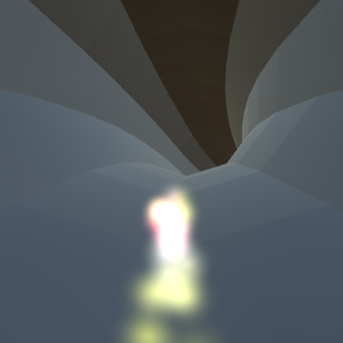
When moving through the system, you'll constantly see gaps in the pipes appear at the edge of our field of view. This happens because we immediately removes pipes that we passed through, even though the camera still sees part of them. We need to keep one pipe behind us to prevent this from happening. We can do this by having PipeSystem return the second pipe, instead of the first one.
public Pipe SetupFirstPipe () {
transform.localPosition = new Vector3(0f, -pipes[1].CurveRadius);
return pipes[1];
}
public Pipe SetupNextPipe () {
ShiftPipes();
AlignNextPipeWithOrigin();
pipes[pipes.Length - 1].Generate();
pipes[pipes.Length - 1].AlignWith(pipes[pipes.Length - 2]);
transform.localPosition = new Vector3(0f, -pipes[1].CurveRadius);
return pipes[1];
}
Alignment of the next pipe to the origin should now be based on second pipe as well.
private void AlignNextPipeWithOrigin () {
Transform transformToAlign = pipes[1].transform;
for (int i = 0; i < pipes.Length; i++) {
if (i != 1) {
pipes[i].transform.SetParent(transformToAlign);
}
}
transformToAlign.localPosition = Vector3.zero;
transformToAlign.localRotation = Quaternion.identity;
for (int i = 0; i < pipes.Length; i++) {
if (i != 1) {
pipes[i].transform.SetParent(transform);
}
}
}
And as soon as we start we should move to the second pipe.
private void Awake () {
…
AlignNextPipeWithOrigin();
}
Now that the gaps are fixed, let's move on to the steering of the avatar. For that Player needs a rotation speed, needs to keep track of the current rotation, and needs a reference to the rotater, which is its only child.
public float rotationVelocity;
private float worldRotation, avatarRotation;
private Transform world, rotater;
private void Start () {
world = pipeSystem.transform.parent;
rotater = transform.GetChild(0);
currentPipe = pipeSystem.SetupFirstPipe();
SetupCurrentPipe();
}
The rotation velocity is in degrees per second. It should be quite fast. I set it to 180, which means that it would take two seconds to go all the way around a pipe.
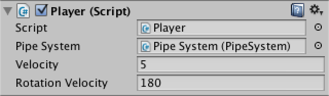
We need player input to actually rotate, and can use Unity's default horizontal input configuration for that. You can find it under Edit / Project Settings / Input. I increased the Gravity and Sensitivity settings to 10 so it responds quickly to input.
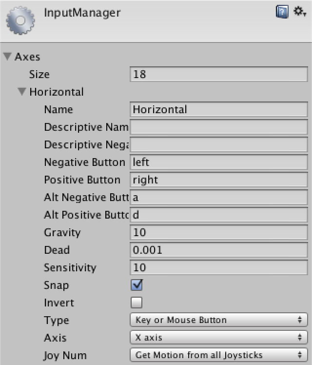
Updating the avatar's position is done by grabbing the axis input, factoring in velocity and time, and updating the rotation.
private void Update () {
…
UpdateAvatarRotation();
}
private void UpdateAvatarRotation () {
avatarRotation +=
rotationVelocity * Time.deltaTime * Input.GetAxis("Horizontal");
if (avatarRotation < 0f) {
avatarRotation += 360f;
}
else if (avatarRotation >= 360f) {
avatarRotation -= 360f;
}
rotater.localRotation = Quaternion.Euler(avatarRotation, 0f, 0f);
}
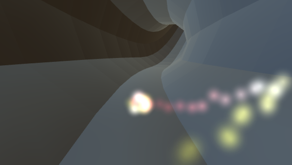
Now that we can steer, let's finalize the appearance of the pipe surface. I want it to look minimalist while still showing the shape of the pipes and enhancing the sense of movement. A simple pattern of white dots on a black background will do. For that we need a new material that uses the Unlit / Texture shader. A texture with a single dot will suffice, as it will be repeated for each quad.
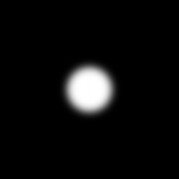
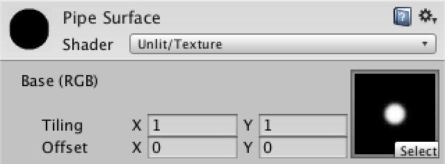
After changing the material of the pipe prefab, everything will become solid black. This is because Pipe doesn't set the UV coordinates of its mesh yet. Each quad needs to cover the 0–1 UV range in both dimensions.
private Vector2[] uv;
public void Generate () {
…
mesh.Clear();
SetVertices();
SetUV();
SetTriangles();
mesh.RecalculateNormals();
}
private void SetUV () {
uv = new Vector2[vertices.Length];
for (int i = 0; i < vertices.Length; i+= 4) {
uv[i] = Vector2.zero;
uv[i + 1] = Vector2.right;
uv[i + 2] = Vector2.up;
uv[i + 3] = Vector2.one;
}
mesh.uv = uv;
}
To create smoother pipes and increase the number of dots, I increased the prefab's segment count to 16, and set its ring distance to 0.77. That makes the dots elongated instead of perfectly circular, which enhances the sense of speed.
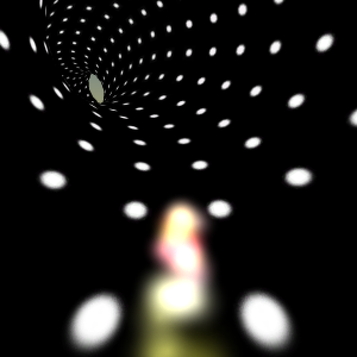
When racing through the pipes for a while, you'll sometimes see an obvious hole appear at end. When using six pipes for the entire system this happens rarely, but when it does it's really jarring. We could increase the pipe count, but unless we set it really high the hole might still appear. A far cheaper solution is to set camera to clear to solid black.
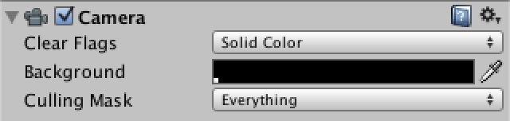
The hole still appears, but it's now pretty hard to notice, especially if the player is also trying to avoiding obstacles. To conceal the hole even better, we can use black fog to fade out the distant pipes. This also adds a sense of depth to the scene, even though we're not using any lights. I used the exponential squared for mode with a density of 0.1 so it appears quickly.
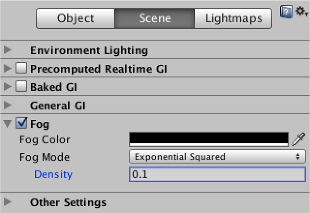
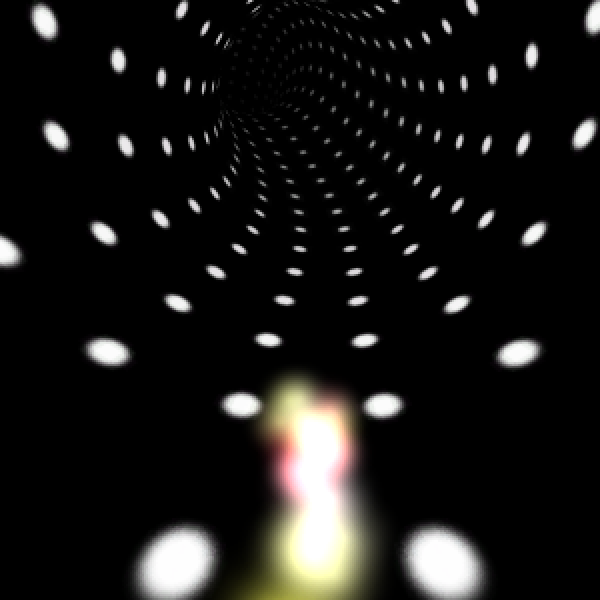
Placing Obstacles
It's time to put stuff inside our pipes. We could include all kinds of items, though we'll limit ourselves to simple motionless obstacles for this tutorial.
Items can be placed placed along a pipe's curve, with a rotator like the avatar to control where on the surface they appear. So positioning an item requires a pipe, a curve rotation, and a ring rotation. Let's add a component script for that. It should be attached to the root object of an item, which has a rotater child, which in turn has the item's 3D model as a child.
using UnityEngine;
public class PipeItem : MonoBehaviour {
private Transform rotater;
private void Awake () {
rotater = transform.GetChild(0);
}
public void Position (Pipe pipe, float curveRotation, float ringRotation) {
transform.SetParent(pipe.transform, false);
transform.localRotation = Quaternion.Euler(0f, 0f, -curveRotation);
rotater.localPosition = new Vector3(0f, pipe.CurveRadius);
rotater.localRotation = Quaternion.Euler(ringRotation, 0f, 0f);
}
}
We can use a simple cube as the 3D model. To make it a little bit interesting, rotate it 45 degrees along its local Y axis, so we'll be looking at one of its corner edges instead of a flat side. I gave them a solid white material that is a little bit transparent, so the player can see what's behind the obstacles. I'd like to use a light to give some depth to the shapes, so I used the Legacy Shaders / Transparent / Diffuse shader.
First create a small obstacle, using a cube with scale (0.3, 0.2, 0.3). The item's local position should be set to (0, -0.9, 0) so it sits on top of the pipe surface. Then also create a large obstacle, with a scale of (0.2, 2.0, 0.2) and without a local offset, so at (0, 0, 0). This gives us a long beam that connects opposite sides of the pipe surface. Then turn both of them into prefabs.
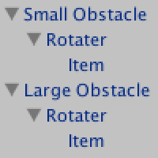
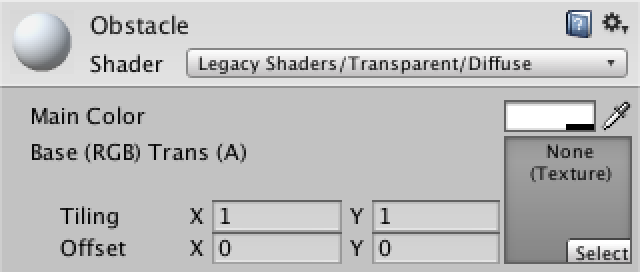
How do we add instances of these obstacles to our pipes? There are many ways in which we could do so. Let's say we have some abstract pipe item generator component that does the job, given a pipe.
using UnityEngine;
public abstract class PipeItemGenerator : MonoBehaviour {
public abstract void GenerateItems (Pipe pipe);
}
This abstraction is useful, but we also need at least one specific approach. For example, let's create a random placer. It generates one item per ring segment of the pipe, aligning it with a random quad on each ring. Which item it generates is random as well.
using UnityEngine;
public class RandomPlacer : PipeItemGenerator {
public PipeItem[] itemPrefabs;
public override void GenerateItems (Pipe pipe) {
float angleStep = pipe.CurveAngle / pipe.CurveSegmentCount;
for (int i = 0; i < pipe.CurveSegmentCount; i++) {
PipeItem item = Instantiate<PipeItem>(
itemPrefabs[Random.Range(0, itemPrefabs.Length)]);
float pipeRotation =
(Random.Range(0, pipe.pipeSegmentCount) + 0.5f) *
360f / pipe.pipeSegmentCount;
item.Position(pipe, i * angleStep, pipeRotation);
}
}
}
This requires that Pipe exposes its curve segment count.
public int CurveSegmentCount {
get {
return curveSegmentCount;
}
}
Now we can use this component to create generator prefabs. Let's make one that always places small obstacles, one that always places large obstacles, and one that mixes them with equal probability.
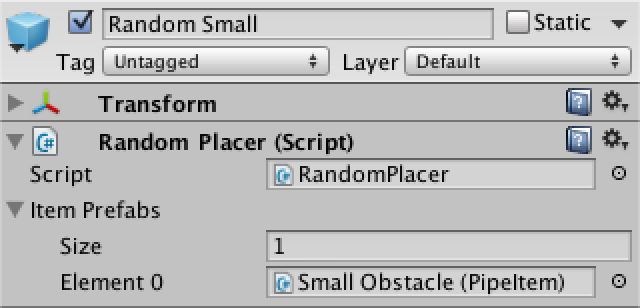
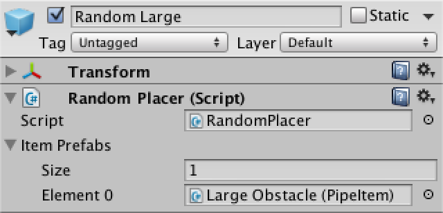
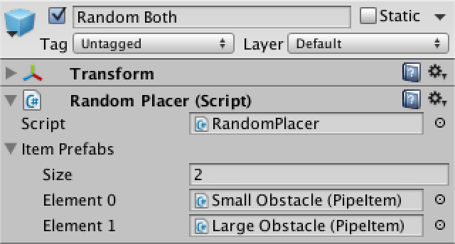
We can also create an item placer component that puts the items in a spiral, either clockwise or counterclockwise. It's just a little bit different from random placement. I marked the differences below.
using UnityEngine;
public class SpiralPlacer : PipeItemGenerator {
public PipeItem[] itemPrefabs;
public override void GenerateItems (Pipe pipe) {
float start = (Random.Range(0, pipe.pipeSegmentCount) + 0.5f);
float direction = Random.value < 0.5f ? 1f : -1f;
float angleStep = pipe.CurveAngle / pipe.CurveSegmentCount;
for (int i = 0; i < pipe.CurveSegmentCount; i++) {
PipeItem item = Instantiate<PipeItem>(
itemPrefabs[Random.Range(0, itemPrefabs.Length)]);
float pipeRotation =
(start + i * direction) * 360f / pipe.pipeSegmentCount;
item.Position(pipe, i * angleStep, pipeRotation);
}
}
}
I created three prefabs for spiral placers as well, with the same odds for picking small and large obstacles.
To use these generators, let's simply give Pipe an array of these generators and have it pick one at random to use for each pipe.
public PipeItemGenerator[] generators;
public void Generate () {
…
generators[Random.Range(0, generators.Length)].GenerateItems(this);
}
I tweaked the odds of which generator is picked by including them more than once in the array of the pipe prefab. I prefer not too many large obstacles and take it easy on the spirals.
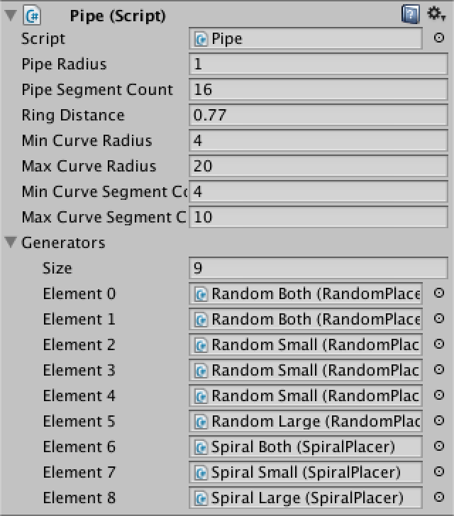
Obstacles are now showing up inside the pipes! But they're quite hard to see. To improve visibility, adjust the environment lighting settings, which you can find via Window / Lighting. Set the ambient source to uniform gray (99, 99, 99) and make sure it's at full intensity.
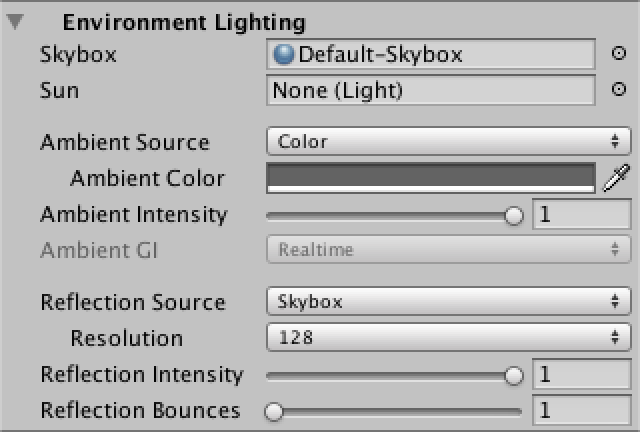
This improves visibility a lot, but gives a very flat result. Let's turn out avatar into a light source by adding short-range point light to it. A range of three units is enough. This makes nearby objects look a lot more interesting.
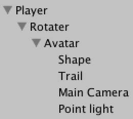
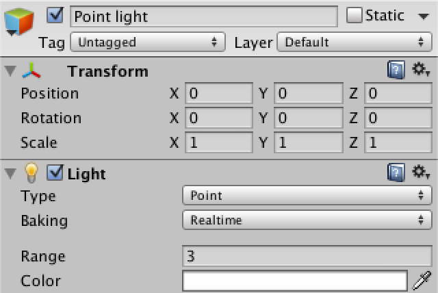
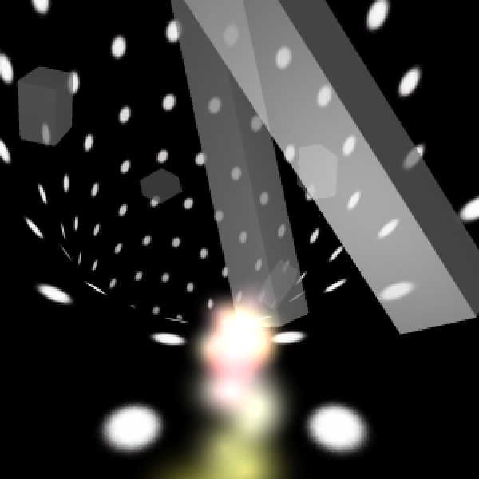
While we're adding items now, we're not yet taking them away. This results in an accumulation of junk in our pipe system. The quick way to fix this is by simply destroying all of a pipe's children before generating new items.
public void Generate () {
…
for (int i = 0; i < transform.childCount; i++) {
Destroy(transform.GetChild(i).gameObject);
}
generators[Random.Range(0, generators.Length)].GenerateItems(this);
}
Now we have a pipe system neatly filled with random obstacles. But the avatar doesn't recognize that they exist and moves straight through them. Of course it should hit obstacles and go out with a bang! To do so, we have to put more functionality into our avatar game object.
Add a sphere collider to the avatar object and set its radius to 0.1. Then give it a rigidbody so the physics system will check for collisions. Mark it as kinematic so the physics system won't try to move it. Then add a new Avatar component with references to the shape and trail particles systems, plus a new burst particle system. We'll need a reference to the player too, which it can find at the root of its hierarchy.
using UnityEngine;
public class Avatar : MonoBehaviour {
public ParticleSystem shape, trail, burst;
private Player player;
private void Awake () {
player = transform.root.GetComponent<Player>();
}
}
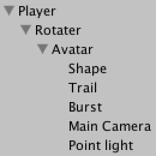
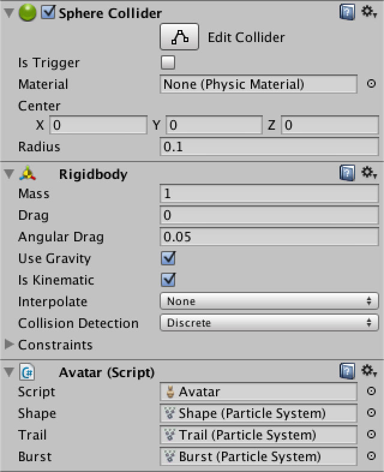
The burst particle system is for producing a death explosion. It won't emit on its own.
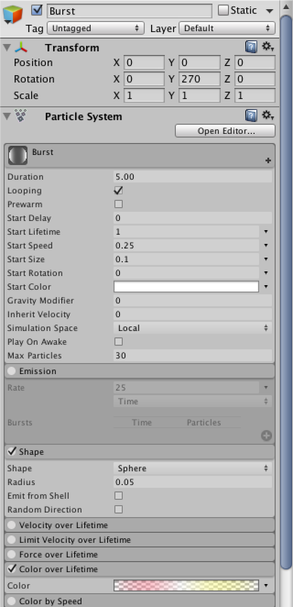
We can detect when the avatar hits an obstacle by turning the colliders of the cubes into triggers and adding an OnTriggerEnter method to Avatar, in which we tell the player to die.
However, instead of dying immediately we can also start a death countdown, during which we perform a death animation and travel a bit further, and only then tell the player that it died.
So when entering a trigger we start a countdown, stop the emission of shape a trail particles, and emit a burst. We can use the lifetime of the burst particles to set the duration of the countdown.
public float deathCountdown = -1f;
private void OnTriggerEnter (Collider collider) {
if (deathCountdown < 0f) {
shape.enableEmission = false;
trail.enableEmission = false;
burst.Emit(burst.maxParticles);
deathCountdown = burst.startLifetime;
}
}
Each update, the avatar has to check whether a death countdown is active, and if so progress it. Once time has run out, restore the settings of the particle systems and tell the player that it should die.
private void Update () {
if (deathCountdown >= 0f) {
deathCountdown -= Time.deltaTime;
if (deathCountdown <= 0f) {
deathCountdown = -1f;
shape.enableEmission = true;
trail.enableEmission = true;
player.Die();
}
}
}
For now, let Player simply deactivate itself on death. That will cause the camera to shut off as well, making it clear that the game is over.
public void Die () {
gameObject.SetActive(false);
}
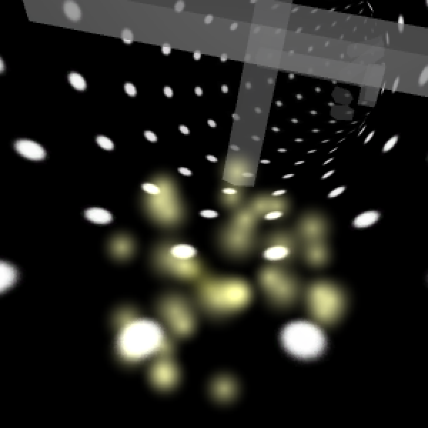
Obstacles are now lethal, which is good. Unfortunately the game suddenly became a bit too deadly, as the player can start right on top of an obstacle and immediately die. To prevent this unfair death, we have to make sure that the first few pipes of the system don't have any obstacles. We can do so by making it optional whether Pipe generates any.
public void Generate (bool withItems = true) {
…
if (withItems) {
generators[Random.Range(0, generators.Length)].GenerateItems(this);
}
}
We can then configure PipeSystem to start with some empty pipes. I stuck with the first two pipes, which are the one just behind the player and the one just in front.
public int emptyPipeCount;
private void Awake () {
pipes = new Pipe[pipeCount];
for (int i = 0; i < pipes.Length; i++) {
Pipe pipe = pipes[i] = Instantiate<Pipe>(pipePrefab);
pipe.transform.SetParent(transform, false);
pipe.Generate(i > emptyPipeCount);
if (i > 0) {
pipe.AlignWith(pipes[i - 1]);
}
}
AlignNextPipeWithOrigin();
}
Creating the User Interface
Right now our game immediately starts playing. Let's no longer do that and show a main menu first. Create a new UI panel via GameObject / UI / Panel. This add a canvas with the panel to the scene, as well as an event system object to handle user input. Rename the canvas to Main Menu and set it to be pixel perfect. Then remove the panel's source image and set its color to black.
The UI is visible in the scene view, but it's displayed at a much larger scale than the 3D content. Switch the scene to the 2D view mode to get a better look at it.
Next, add a button to the main menu. It doesn't need to be a child of the panel, but it must be below it in the hierarchy so it's drawn later. I set its font size to 40 and set its text contents to ">" so it looks like a crude play button.
Postion the button in the center of the panel and give it a reasonable size. I made it 160 by 50.
We need a main menu component with a method to start the game. It needs to tell the player to start playing, and then deactivate itself so the menu disappears.
using UnityEngine;
public class MainMenu : MonoBehaviour {
public Player player;
public void StartGame () {
player.StartGame();
gameObject.SetActive(false);
}
}
Now modify Player so it prepares itself and grabs the first pipe in its own StartGame method, instead of in Start. Grabbing the world and the rotater can move to Awake, where it should deactivate itself as well so it doesn't immediate begin racing. You can then add the MainMenu component to the UI and assign the player.
public void StartGame () {
distanceTraveled = 0f;
avatarRotation = 0f;
systemRotation = 0f;
worldRotation = 0f;
currentPipe = pipeSystem.SetupFirstPipe();
SetupCurrentPipe();
gameObject.SetActive(true);
}
private void Awake () {
world = pipeSystem.transform.parent;
rotater = transform.GetChild(0);
gameObject.SetActive(false);
}
We now have to configure the button so it invokes the menu's method. Do this by adding an entry to its On Click () area, select the menu object, then select MainMenu.StartGame from the available options. Note that the method needs to be public for it to show up.
The game now starts when pressing the play button, of course only when actually in play mode. To return to the menu after the player has died, Player needs a reference to the main menu as well, so it can invoke an EndGame method on it. As it makes sense to show the final score to the player, pass the traveled distance to it as well.
public MainMenu mainMenu;
public void Die () {
mainMenu.EndGame(distanceTraveled);
gameObject.SetActive(false);
}
MainMenu needs a score label to show the final score, which we do via a UnityEngine.UI.Text component. As players like big scores, let's multiply the distance by ten before showing it. Also convert it to an integer before turning it into a string, so we get rid of the fractional part. Of course the menu has to reactive itself as well.
using UnityEngine;
using UnityEngine.UI;
public class MainMenu : MonoBehaviour {
public Player player;
public Text scoreLabel;
public void StartGame () {
player.StartGame();
gameObject.SetActive(false);
}
public void EndGame (float distanceTraveled) {
scoreLabel.text = ((int)(distanceTraveled * 10f)).ToString();
gameObject.SetActive(true);
}
}
Add a text object to the menu, make sure it's white so it shows up on the black background, and assign it to the menu component.
Once back at the main menu, the game has to restart properly when the button is pressed again. We have to modify PipeSystem a bit to support this. Leave the instantiation of the pipe objects in Awake, but move the invocation of their Generate methods and their alignment to SetupFirstPipe.
private void Awake () {
pipes = new Pipe[pipeCount];
for (int i = 0; i < pipes.Length; i++) {
Pipe pipe = pipes[i] = Instantiate<Pipe>(pipePrefab);
pipe.transform.SetParent(transform, false);
}
}
public Pipe SetupFirstPipe () {
for (int i = 0; i < pipes.Length; i++) {
Pipe pipe = pipes[i];
pipe.Generate(i > emptyPipeCount);
if (i > 0) {
pipe.AlignWith(pipes[i - 1]);
}
}
AlignNextPipeWithOrigin();
transform.localPosition = new Vector3(0f, -pipes[1].CurveRadius);
return pipes[1];
}
Now that out game properly restarts, let's add multiple difficulty settings. We can do this by changing from a fixed velocity to a choice of acceleration. This means that the player will go faster and faster, until the inevitable crash against an obstacle. The difficulty is set by the amount of acceleration, which we configure in an array. Also, we want to have a start velocity, otherwise beginning of the game would be too slow. Adjust Player to provide this new functionality.
public float startVelocity;
public float[] accelerations;
private float acceleration, velocity;
public void StartGame (int accelerationMode) {
…
acceleration = accelerations[accelerationMode];
velocity = startVelocity;
…
}
private void Update () {
velocity += acceleration * Time.deltaTime;
…
}
This means that MainMenu needs to pass along mode, which it got from somewhere. Let's leave that up to the button.
public void StartGame (int mode) {
player.StartGame(mode);
gameObject.SetActive(false);
}
I set the start velocity to three and chose three accelerations, 0.025, 0.05, and 0.1. While that might not look like much, an acceleration of 0.1 already results in quite short games.
The play button no longer works. That's because we removed the old StartGame method that had no parameters, so the button can no longer find it. We have to select the new method instead. This time it will allow us to enter an argument value for the method's integer parameter, which defaults to zero.
Create two duplicates of the button and set their method arguments to one and two. Adjust the button labels as well to indicate the different choices. Arrange them in a neat column.
Now that the menu is working, let's add in in-game head-up display (HUD) so the player can see how fast they're moving and how far they've traveled. Create a new canvas for that purpose. Add two text labels at its top right and bottom right corner and set their anchors appropriately. That way they'll stick to the corners, no matter the actual size of the display.
Decrease the sorting order of the HUD so it falls behind main menu, hidden by default.
Create a HUD component to make setting the labels convenient. To stay consistent with the main menu, apply the same conversion to both the distance and velocity.
using UnityEngine;
using UnityEngine.UI;
public class HUD : MonoBehaviour {
public Text distanceLabel, velocityLabel;
public void SetValues (float distanceTraveled, float velocity) {
distanceLabel.text = ((int)(distanceTraveled * 10f)).ToString();
velocityLabel.text = ((int)(velocity * 10f)).ToString();
}
}
Then give Player a reference to the HUD so it can keep the values up to date.
public HUD hud;
public void StartGame (int accelerationMode) {
…
hud.SetValues(distanceTraveled, velocity);
}
private void Update () {
…
hud.SetValues(distanceTraveled, velocity);
}
Supporting Multiple Platforms
By now our prototype is in good enough shape to get it into people's hands. So make a desktop build and try it out!
One annoyance that you'll encounter is the mouse cursor. It should really be hidden when game is playing. Fortunately, this is easily accomplished by MainMenu.
public void StartGame (int mode) {
…
Cursor.visible = false;
}
public void EndGame (float distanceTraveled) {
…
Cursor.visible = true;
}
A desktop build is nice, but you can reach a much larger audience by going online. So make a web player build! It should work fine, except that there might be something wrong with the resolution when going fullscreen. It turns out that the settings of the standalone default resolution influences the fullscreen resolution of the web player. This is weird, but there is a solution. Disable the standalone's native resolution, put in some huge values, then enable native resolution again. This will ensure the highest possible resolution is used.
WebGL builds work too, but keep in mind it's still a preview feature. Complilation takes a long time and the build size is quite large, even the compressed version.
Maybe the best way to get people to try your prototype is to physically put it into their hands. Our game is quite playable on mobiles, so and Android or iOS build is a great idea. This means that we should support touch input.
Unity's event system already provides touch support for the UI. We can provide steering support by simply detecting whether either the left or the right side of the screen is touched. This works no matter the orientation of the device. As input processing is now more complex, let's put it in a separate Player method.
private void Update () {
…
UpdateAvatarRotation();
hud.SetValues(distanceTraveled, velocity);
}
private void UpdateAvatarRotation () {
float rotationInput = 0f;
if (Application.isMobilePlatform) {
if (Input.touchCount == 1) {
if (Input.GetTouch(0).position.x < Screen.width * 0.5f) {
rotationInput = -1f;
}
else {
rotationInput = 1f;
}
}
}
else {
rotationInput = Input.GetAxis("Horizontal");
}
avatarRotation += rotationVelocity * Time.deltaTime * rotationInput;
…
}
Finally, the frame rate is not that good. This is because Unity uses a default limit of 30 frames per second on mobiles. We can remove this limitation by setting the target frame rate to a much higher value. This can be done anywhere, but should be done early, for example when MainMenu awakens.
private void Awake () {
Application.targetFrameRate = 1000;
}
Now go out and playtest!
unitypackage PDF